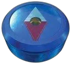

TOP ／ ご利用ガイド
ご利用ガイド
旅のしおり。困ったときは、ここをひらいてね。

時の神殿から入る
トップでスクロールすると、台座のマスターソードが抜けて時空の渦へ。「剣を抜く」ボタンで自動で進むこともできます。「スキップ」ですぐ十字路へ行けます。

十字路で店をえらぶ
北にコキリのショップ、西にハイラルショップ、東にゴーストショップ。扉にふれると店員が顔を出します。

店員に話しかける
棚の品をえらぶと、店員が中身とおすすめを教えてくれます。会話ウィンドウはクリック（Enter）で先へ進みます。

ふくろに入れる
3つの店の品を、ひとつのふくろにまとめられます。3,000ルピー以上で送料無料。

射的屋でおまけ
10発で300点をこえると割引がもらえます。いちばん高い割引が、ふくろで自動で使われます。

宝箱をひらいて完了
お届け先を入力して確認したら、宝箱をあけて注文完了。注文はデモなので、送信や決済はされません。
よくある質問
本当に商品が届きますか？
届きません。このサイトの注文・決済はすべてデモです。品物はすべて実在の商品なので、気になったら商品ページの「実際の販売先をさがす」から探してみてください。
ルピーと円の関係は？
1ルピー＝1円として表示しています。価格は参考価格（税込・目安）で、実際の価格は販売店や時期によって変わります。
音が鳴りません／うるさいです
右上のスピーカーのボタンで、音のオン・オフを切りかえられます。BGMと効果音は、ブラウザの中で作っているオリジナルです。
ふくろの中身はどこに保存されますか？
お使いのブラウザの中（localStorage）にだけ保存されます。外部に送られることはありません。
動きが多くて見づらいです
端末の「視差効果を減らす（動きを減らす）」設定をオンにすると、アニメーションをひかえめにして表示します。
射的屋の割引が消えました
注文を完了すると、使った割引はリセットされます。もう一度射的屋で遊んで、おまけをもらってください。
このサイトについて
HYRULE MARKET は「ゼルダの伝説 時のオカリナ」を記念して、個人が自分で楽しむために作った非公式のファンサイトです。任天堂株式会社および関係各社とは一切関係ありません。ロゴ・キャラクター・アイテムのデザインなどの権利は、それぞれの権利者に帰属します。
紹介している商品は実在の商品ですが、各メーカー・販売店とは関係ありません。商品名・メーカー名は紹介のために記載しています。
BGM・効果音・時の神殿や時空の渦の3D表現・射的屋の店内は、このサイトのためにコードで作ったオリジナルです。